# 深入理解 ES Modules (手绘示例)
虽然花了近十年的标准化工作才走到这一步，ES 模块终于为 JavaScript 带来了正式的，标准化的模块系统。
漫长的等待终于要结束了，随着即将在五月发布的 Firefox 60 (目前尚处于 beta 版本中)，所有的主流浏览器都即将支持 ES 模块，并且 Node 模块工作小组目前也正在为 Node.js 添加对 ES 模块的支持。同时，ES 模块对 WebAssembly 的支持也正在进行当中。
许多 JavaScript 的开发者都知道 ES 模块一直存在着一些争议，但是很少有人真正地知道 ES 模块的原理。
现在就让我们来探索一下 ES 模块到底解决了什么问题以及它和其他模块系统的区别。
# 模块到底解决了什么问题？
仔细想想，使用 JavaScript 编码在于正确地管理变量，在于给变量赋值，或者给变量赋以数值或者合并两个变量并把它们赋值给另外一个变量。
因为你的大多数代码都是在更改变量，如何组织这些变量将会对你的编码方式以及代码的维护产生重大的影响。
当一次只需要考虑几个变量的时候使得事情变得非常简单，JavaScript 有一个方式来帮助你实现这个目标，那就是 —— 作用域。因为作用域的存在，函数不能访问 定义在其他函数内部的变量。

这很棒。这意味着当你专注于实现一个函数的时候，你只需要专注于实现这个函数，而不需要担心其他的函数会影响到你这个函数里的变量。
不过，它也有一个缺陷，它使得不同的函数之间共享变量变得更加困难。
那么假如你的确想要在作用域之外共享你的变量呢？通常的做法是将它放在当前作用域之上，比如：全局作用域。
或许你还记得使用 jQuery 的那些日子，在你加载任何 jQuery 的插件之前，你必须确保 jQuery 已经存在于全局作用域内了。

这是可行的，但是会产生一些烦人的问题。
首先，你所有的 script 标签都必须放置于一个正确的顺序。那么你就必须很小心并确保这些脚本之间不会互相影响。
如果你确实不小心搞乱了顺序，那么在代码运行的时候，你的应用就会抛出异常。当函数寻找 jQuery 对象的存在 —— 也就是全局作用域之下，但是却找不到的时候，函数就会报错并停止执行。
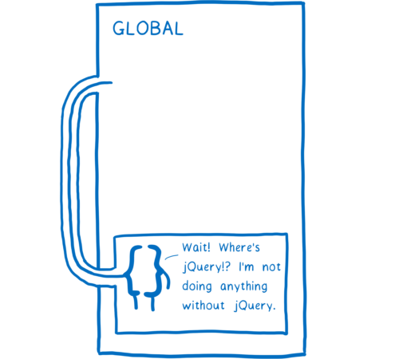
这让代码维护变得棘手。移除旧的代码或者是 script 标签就像是玩赌场转盘一样。你无法预料到什么代码可能崩溃。代码之间的依赖关系变得隐蔽。任何函数都可以获取到全局作用域上的任何东西，所以你并没有办法知道哪个函数依赖于哪个 script 标签。
其次，由于你的变量都存在于全局作用域上，所有处于这个作用域之上的代码都可以改变这些变量。恶意代码可以通过更改这些变量来让你的代码做并非你本意的事情，或者非恶意的代码会不小心破坏你的变量。
# 模块如何提供帮助
模块为你提供了一个更加好的方式来组织这些变量和方法。有了模块，你可以将这些有意义的函数和变量组织在一起。
模块会将这些函数和变量放入一个模块作用域当中。模块作用域使得模块中的不同函数能够共享这些变量。
但是不同与函数作用域，模块作用域有一种方法能够使得其他的模块也可以访问这个模块的变量。他们可以显式地指定模块中的哪些变量，类或者是函数可以被其他模块访问。
当一些东西对其他模块可用的时候，这叫做 "导出(export)"。当模块的导出存在的时候，其他模块就能够显式地指定它们依赖于这个模块的某些变量，类或者函数。
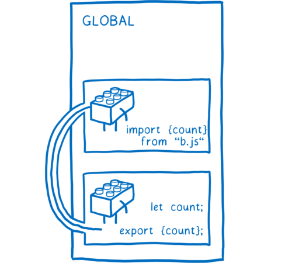
因为存在这种显式的关系，你可以明确的指出当你去掉了另外一个(导出)，哪个模块会崩溃掉。
一旦拥有了这种能在模块之间导出和导入变量的能力，把你的代码分割成更小并且能够互相之间独立工作的代码块就变得很容易了。 然后你就可以结合或者重组这些代码块，像组合乐高积木一样，来使用同样的模块创建不同的应用。
正因为模块如此地有用，已经存在很多给 JavaScript 添加模块的尝试。目前，有两种模块系统被广泛地使用着。CommonJS(CJS) 曾经被 Node.js 所使用。ESM(ECMAScript 模块)是一个更新的模块系统，并加入到 JavaScript 的规范当中。浏览器已经支持 ES 模块了，Node.js 也正在添加对它的支持。
现在，就让我们更加深入地来看一下这个新的模块系统是如何运作的。
# ES 模块是如何运作的
当使用模块来开发的时候，会建立一个模块模块依赖图。不同依赖之间联系来自于你使用的任何 import 语句。
这些 import 语句是浏览器或者 Node 确切地知道你需要加载什么样的代码的关键之处。你需要提供一个文件来作为依赖图的入口。 从这个入口开始，根据这些 import 语句就可以找剩余所需要的代码。
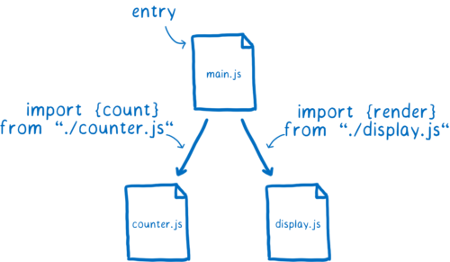
但是浏览器并不能直接使用这些文件本身。它必须要经过解析并转换成一种叫做 "模块记录（Module Records）"的数据结构。只有这样，浏览器才能确切地知道这个文件里发生了什么。

在这之后，模块记录需要转变成模块实例。模块实例包含了两个要素：编码(code)和状态(state)
编码基本上就是一些系列的指令。它就像配方一样。但是只有配方本身，什么都做不了，所以还需要一些原材料来配合这些指令。
什么是状态？状态就提供了这些原材料。状态就是这些变量在任何时间点的具体值。当然，这些变量不过是内存中保存这些变量的容器的别名。
所以模块实例就结合了编码(一系列的指令)和状态(所有的变量的值)。

我们需要的是每一个模块的模块实例。模块加载的过程就是从入口文件开始最后得到整个模块实例的依赖图。
对于 ES 模块来说，这个过程主要分三步来进行：
- 构造 —— 寻找，下载并解析所有文件成模块记录
- 实例化 —— 在内存中寻找位置存放所有导出的值（但是暂时还不要给他们填上具体的值）然后让导出和导入都指向这些内存中的位置。这个过程也叫做链接(linking)。
- 求值 —— 执行编码并给实例化中所对应的内存的位置填充实际的值。

人们说 ES 模块是异步的。你可以认为它是异步的因为实际的运作被分成了三个不同的阶段 —— 加载，实例化以及求值，而这些阶段都可以分开完成。
这意味着规范确实引入了一种在 CommonJS 中没有的异步。稍后我会作更多的解释，但是在 CJS 中，一个模块下游的依赖关系是立即加载，实例化并求值的，不存在任何的间断。
但是，这些步骤不一定要是异步的，它们也可以以同步的方式完成。这取决于用什么来加载。这是因为不是所有的东西都是由 ES 模块规范来定义的。实际上有两部分工作，分别由不同的规范来覆盖。
ES 模块规范 说明了应该如何将文件解析成模块记录，以及如何实例化和对模块求值。然而，它并没有指明如何获取这个模块。
加载文件的是模块加载器(loader), 而加载器由不同的规范来指定。对于浏览器来说，这个规范就是 HTML 规范。但是，基于你使用的不同的平台可以有不同的加载器。
加载器同时还精准地控制着模块的加载方式。这些方法叫做 ES 模块方法 —— ParseModule, Module.Instantiate 以及 Module.Evaluate。这有点像一个提线木偶操作师操作着 JS 引擎。
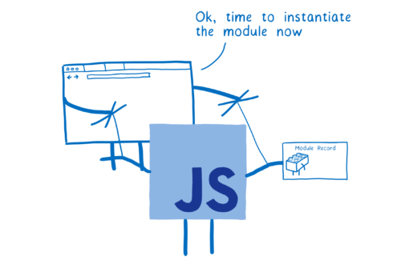
现在让我们更加详细地介绍每一步的过程。
# 构造（Construction)
对于每一个模块，在构造过程都会经历这三个过程：
- 找到在哪里下载包含该模块的文件(也称作模块解析)
- 获取文件(通过 url 从文件系统中下载）
- 将这些文件解析成模块记录
# 寻找并获取文件
加载器会处理查找和下载文件的过程，首先它需要找到入口文件。在 HTML 当中，你通过 script 标签来告诉加载器哪里去查找。

但是，它如何找到接下来的一堆模块呢 —— main.js 直接依赖的模块。
这就是 import 语句发挥作用的地方。import 语句的其中一部分叫做模块标识符，它会告诉加载器去哪寻找下一个模块。
关于模块标识符值得一提的地方是：有时候它们需要在浏览器和 Node 之间做不同的处理。每个宿主都有各自的方法来解析模块标识符的字符串。为了达到这个目的，它使用了名为模块解析算法的东西，而这个算法根据平台的不同也有所不同。目前来说，一些在 Node 中能够正常解析的模块标识符无法在浏览器中正常解析，但是一个致力于修复它的工作正在进行中。
直到这个问题被修复之前，浏览器只接受 URL 作为模块标识符。它们会从模块标识符指定的 URL 中下载对应的模块文件。对于模块的依赖图的生成来说，这一步不是同时进行的。因为在你解析模块文件之前，你无法明确该模块需要什么依赖，并且你无法在获取文件之前就解析它。
这意味着我们必须一层一层地深入模块的结构树，解析一个文件然后理清楚改模块的依赖，然后进一步获取并加载这些依赖。
如果主线程需要等等待每个文件的下载，那么其他的下载任务就会在队列中等待。
这是因为在浏览器当中，下载的部分需要花费很长的时间。

基于这张 图表。
像这样阻塞主线程会使得那些使用模块来构建的 App 的速度变得很慢。这也是 ES 模块规范将实现算法划分成多个阶段的原因之一。将构建阶段单独划分出来允许浏览器在处理同步的实例化阶段之前就能够下载文件并且构建模块依赖图。
这种实现方式 —— 将模块算法划分为不同阶段，是 CommonJS 模块和 ES 模块的主要区别之一。
CommonJS 不采用这用的方式是因为从文件系统中读取文件和从网络中下载文件比起来要快得多。这意味着 Node 可以在加载文件的时候阻塞主线程。然后既然文件以及加载完了，那么就顺其自然地实例化和求值(在 CommonJS 中不是分开的阶段)。这也意味着，在返回模块实例之前，需要遍历整棵模块依赖树并对任何模块依赖加载、实例化和求值。
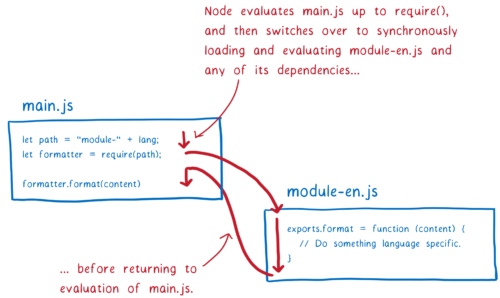
CommonJS 的实现方式有一些影响，之后我会进行解释。但值得注意的一点是，在使用 CommonJS 模块的 Node 环境中，你可以在模块标识符中使用变量。因为在查找下一个模块之前，会执行当前模块的所有代码(require 语句之前)。这意味着当 Node 进行模块解析的时候，模块标识符中的变量已经有值了。
但是对于 ES 模块来说，我们在执行任何求值计算之前，事先构建了整个模块依赖图。这意味着在模块标识符当中不可以存在变量，因为这些变量还没有具体的值。
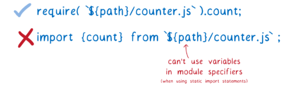
但是有时候，在模块路径中使用变量非常有用。比如，你可能会根据代码的不同条件或者当前运行环境的不同来切换加载不同的模块。
为了在 ES 模块中实现同样的效果，这里有一个叫做 dynamic import 的提案。有了它，你可以使用类似 import(`${path}/foo.js`) 的语句
这个方法的原理在于任何使用 import() 加载的文件会被处理为一个分散的依赖图的入口。而被动态引入的模块建立了一个新的模块依赖图，这个模块依赖图的处理是分开进行的。
有一点需要注意 —— 同时处于两个依赖图中的任何一个模块将会共享同一个模块实例。这是因为模块加载器会对模块实例进行缓存。对于特定全局作用域中的每一个模块，都只会拥有一个模块实例。
这意味着引擎的工作量更少。比如，一个模块文件只会获取一次，即使有多个模块同时依赖于它(这是我们需要模块缓存的原因之一，我们会在求值的章节中介绍另外一个原因)。
加载器通过一个叫做 模块映射(module map) 的东西来管理模块缓存。每一个全局环境都在一个单独的模块映射里跟踪其模块。
当加载器加载一个 URL 的时候，它会将这个 URL 放到模块映射里，然后记下当前处于加载状态。然后它会发出请求并开始处理下一个要加载的文件。
那么，如果另外一个模块依赖了某个相同的文件呢？加载器会检查模块映射里的每一个 URL，如果它发现已经处于加载状态了，那么加载器会跳过并处理下一个 URL。
但是，模块映射不仅仅跟踪那些模块正在被加载，它还作为模块的缓存，我们接下来会讲到。
# 解析（Parsing）
现在我们已经获取到了模块文件，我们需要将它解析成模块记录。这能够帮助浏览器理解模块的各部分分别是什么。
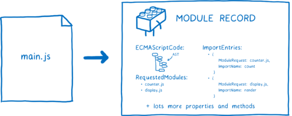
一旦模块记录被创建，就会被放到模块映射里。这意味着，只要从外部请求对应的模块，模块加载器就可以从模块映射中拿到对应的模块记录。

在解析的过程中，有一个细节看起来可能微不足道，但是实际上有很大的影响。所有的模块都被以有 "use strict" 在顶部的情况解析。还有一些其他细微的差别，比如，await 关键字被保留在模块的顶级代码中，以及 this 的值是 undefined
解析的不同被称之为 解析目标（parsed goal），如果对同一个文件使用不同的解析目标，那就会的到不同的结果。所以你需要在解析开始之前就知道文件的类型，无论它是模块与否。
在浏览器当中非常简单，你只需要在 script 标签中加入 type=module。这告诉浏览器，当前文件需要以模块的方式来解析，并且因为只有模块才能够被导入，浏览器就能够知道当前文件里所有的导入也都是模块。

但是在 Node 当中，我们不使用 HTML 标签，所以我们没办法使用 type 属性。社区尝试解决这个问题的方法之一是 —— 使用 .mjs 扩展名。使用这个扩展名能告诉 Node，“当前这个文件是一个模块”。所以你能看到在谈论使用这个来作为解析目标的信号。关于这个方案的讨论还在不断地进行中，所以目前来说 Node 社区最后到底会使用什么样的信号还不明确。
无论使用哪种方式，加载器都会决定是否要将一个文件当做模块来解析。如果它是一个模块，并且有一些导入，那么加载器将会再次进行这个过程，直到所有的文件都被加载和解析。
当我们完成之后，也就是加载的过程结束之后，你已经从原来只有一个入口文件的变成拥有一堆模块记录。
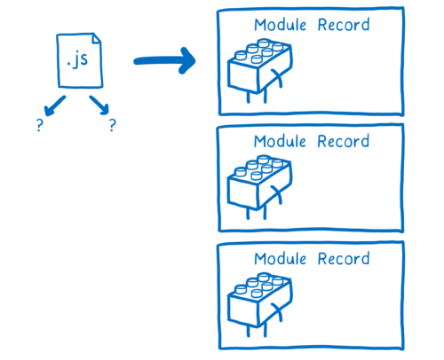
下一步就是实例化这些模块并将这些实例链接在一起。
# 实例化(Instantiation)
像我之前所提到的，一个模块实例包含了编码和状态。这些状态存在于内存之中，因此实例化的步骤就是将模块的内容连接到内存之中。
首先，JS 引擎会创建一个模块环境记录。它为模块记录管理变量，然后引擎会为模块导出在内存中找到位置存放。模块环境变量会跟踪内存中的哪个位置对应哪个导出。
这些内存中的位置暂时还没有具体的值在里面。只有在求值之后才会为它们填充实际的值。对于这个规则有个要警惕的地方：任何导出的函数声明都会在这个阶段初始化。这对于求值来说更加简单。
为了实例化模块整个依赖图，引擎会执行 "深度优先后序遍历"，这意味着引擎会深入到依赖图的底部 —— 到底部某个不依赖任何其他依赖的模块依赖，然后设置它们的导出。

当引擎完成链接模块下游的所有导出的时候，然后回到上一个级别链接那个来自模块所有的导入。
注意，导入和导出都指向内存中的同一个位置。链接所有的导出首先确保了所有的导入都能够正确地匹配这些导出。
这个过程和 CommonJS 模块是不同的。在 CommonJS 当中，整个导出对象被复制到导出上。这意味着任何的导出值(比如数字)都是副本。
这也表示，如果导出模块发生之后发生了改变，导入模块并不会观测到这个变化。

与之相反，ES 模块使用了叫做 “活动绑定(live bindings)” 的机制。导入和导出模块都指向内存中的同一个位置。当导出模块改变了其中导出的某个值，这个变化也会迅速地显现在导入模块当中。
导出值的模块可以随时更改这些值，但导入模块不能更改其导入的值。也就是说，如果一个模块导入了一个对象，它可以改变对象身上的属性值。
使用活动绑定的原因是可以在不运行任何代码的的情况下就将这些模块链接在一起。这一点对于循环依赖的模块的执行很有帮助，接下来我会解释。
所以在这一步的最后，我们将所有模块实例的导入和导出的变量在内存中的位置链接在一起。
现在我们就可以开始对代码求值，然后给这些内存中的地址填充上实际的值。
# Evaluation
最后一步就是对这些内存中的位置进行值的填充。JS 引擎通过执行顶层代码(函数之外的代码)来实现。
除了给内存里的空间填值之外，求值过程也存在着一些副作用，比如，一个模块可能会请求一个服务器。
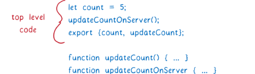
因为潜在的副作用，你只想对模块求值一次。与实例化中发生的链接相反，它们多次链接的结果都是一致的，但根据操作次数的不同，求值所产生的结果可能不同。
这也是需要模块映射的原因之一。模块映射通过规范的 URL 来缓存模块，使得每个模块只有一个模块记录。这保证了每个模块只会执行一次，和实例化一样，这个过程也是以 “深度优先后续遍历” 的方式来执行。
那么我们之前提到的循环引用的问题呢？
在循环依赖之中，最终会在依赖图中产生一个循环。通常来说，这会是一个长循环，但是为了解释这个问题，我打算用一个模拟的短循环的例子。
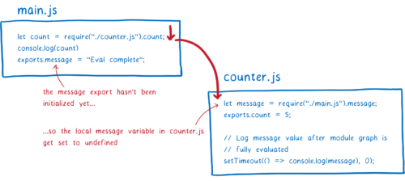
首先我们来看看在 CommonJS 模块中，循环依赖是怎么实现的。首先，main 模块会一直执行到 require 语句。然后它就会转而加载 counter 模块。
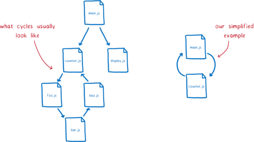
然后 counter 模块会尝试从导出对象上访问 message。但因为 message 在 main 模块中还没有被求值，会返回 undefined。JS 引擎将会为本地变量分配内存空间并设置其值为 undefined
求值过程将会继续在 counter 模块的的顶级代码中执行，并执行到底部。我们想看看 message 最终是否会获取到正确的值(在 main.js 求值之后)，所以我们设置了一个 timeout。然后求值将在 main.js 中恢复。

message 变量将会初始化并被加到内存当中。但是因为 main 导出的 message 和 counter 中的 require 还没有关联，所以在引入的模块中（counter.js），message 仍然保持为 undefined
如果导出都是以 "活动绑定" 的方式处理的，那么 counter 模块最终将会得到正确的值。那么等到 timeout 运行的时候，main.js 求值已经结束并且填充了值。
支持这些循环依赖的背后是 ES 模块设计的重要原理。是这个“三步骤”的设计才使得循环依赖得以实现。
# ES 模块的当前状态
随着 Firefox 60 在五月早期的发布，所有主流浏览器都将默认支持 ES 模块了。Node 也添加了对其的支持，并且有一个致力于解决 CommonJS 和 ES 模块之间的兼容性的问题的工作小组在不断地努力。
这意味着，你将可以使用 type=module 的方式来使用模块的导入和导出。然而，更多的模块特性也即将到来。处于 Stage 3 的提案 dynamic import 也在具体的进程中。import.meta 也是如此，它将支持 Node 上的一些用例。同时 module resolution 提案也会使得在浏览器和 Node.js 之间的差别变得更加平滑细微。所以我们能够期待未来可以鞥更好地使用模块。